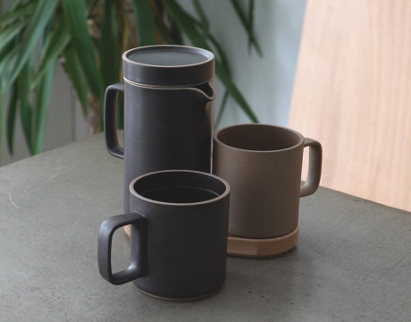

Pottery Making
Set of earthy ceramics
Handmade on the pottery-wheel from black stoneware and finished with a matte glaze
Learn the case studyExploring about the possibility that happens when you try something you never tried
See our class scheduleThe Journey
Helping people to experience new things and get inspired from it is one of our main goals
The sewing class consists of five levels. Each level has different difficulty and focus. Start as a beginner, finish as an advanced
Some of our crafts and arts have been exhibited and also have many enthusiasts
Pottery Making
Set of earthy ceramics
Handmade on the pottery-wheel from black stoneware and finished with a matte glaze
Learn the case studyWoodworking
Mingle desk
The desks offered on this fitting and designed from mid-century modern furniture style
Learn the case studyBrings value to the crafts
Fundamentals is always on top of our head, brings value to the crafts and arts is a must in this workshop
Savannah Bjork, Painting class participant